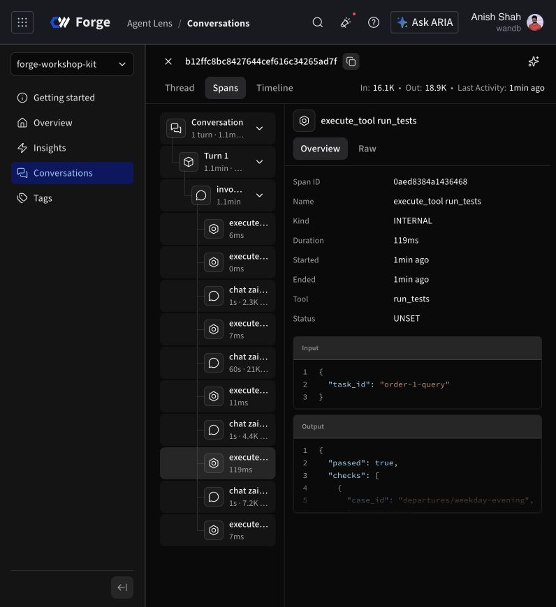

Recorded native Agent Lens capture · R4
The team query worker tested its patch
- The worker read and changed
query.py. - Its
run_testsaction namesorder-1-query. - The tool returned
passed: true.
This is the authenticated capture of the exact span linked from the saved task. It is a component check. The integrated app is evaluated separately.
